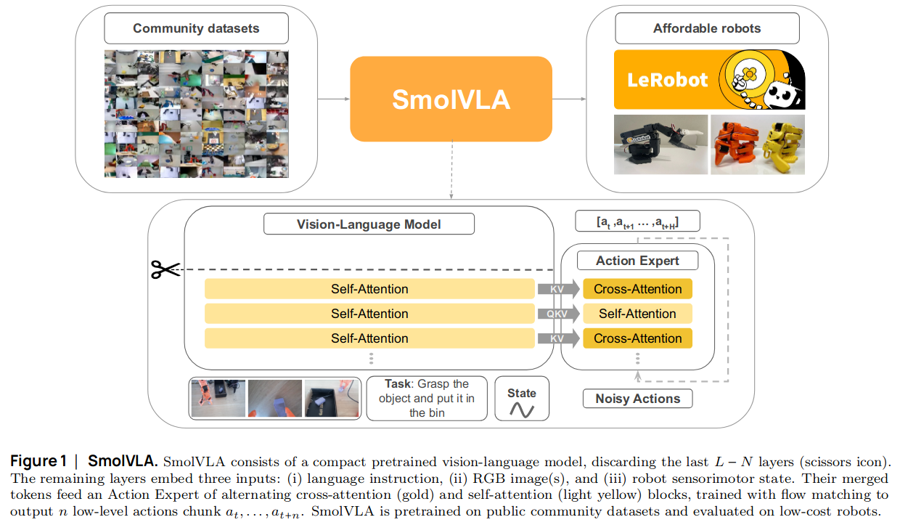
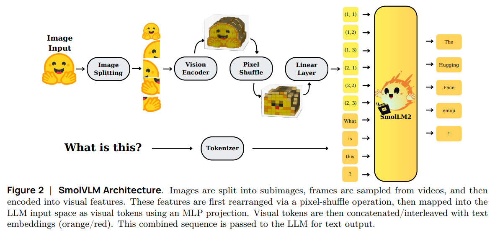
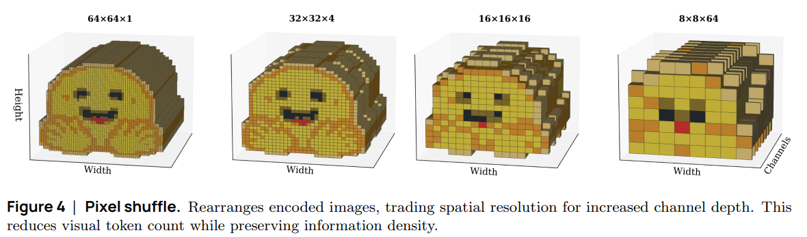
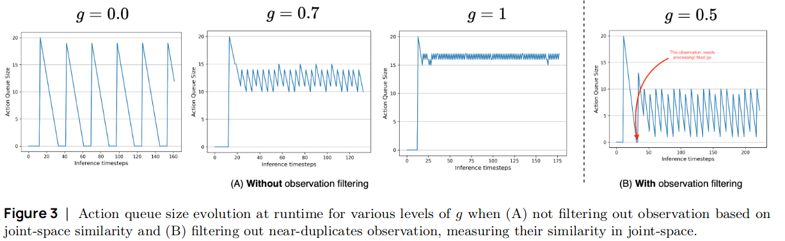
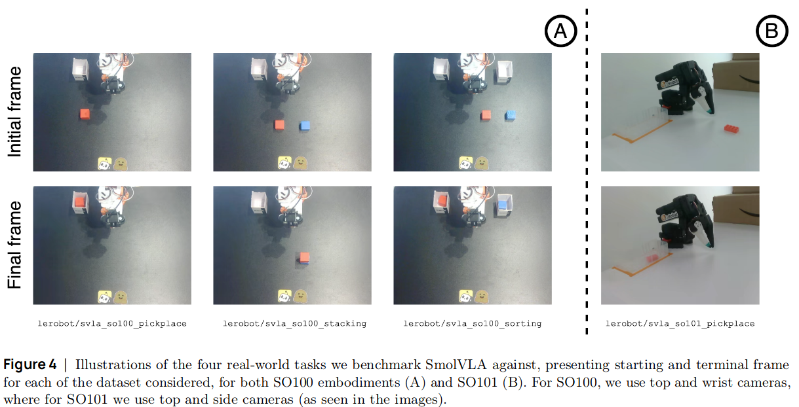
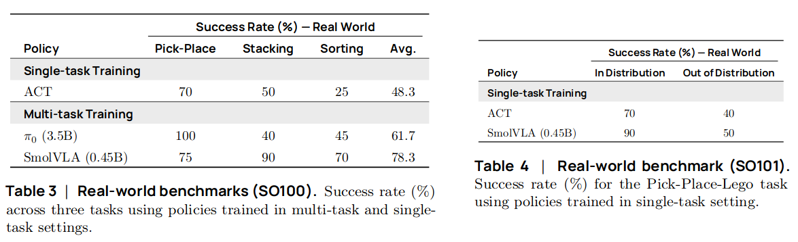
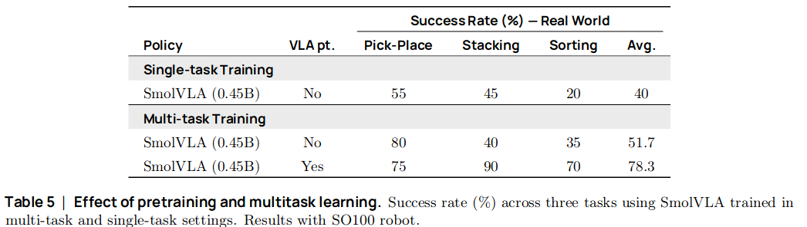
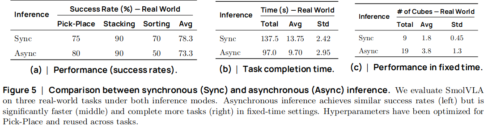

SmolVLA: A Vision-Language-Action Model for Affordable and Efficient Robotics
Contents
SmolVLA: A Vision-Language-Action Model for Affordable and Efficient Robotics#
제목: SmolVLA: A Vision-Language-Action Model for Affordable and Efficient Robotics
저자: Mustafa Shukor et al., Sorbonne University & Hugging Face
Overview#
Target task: Imitation Learning
Algorithm class: Vision-language-action (VLA) model
Motivation
Impactful한 VLA 모델들의 경우 독점적으로 발전해왔다.
즉, model은 공개되어 있어도 데이터셋이나 훈련 디테일, 중요한 방법론들은 공유되지 않은 경우가 많다.
NLP나 CV 분야처럼 발전하기 위해서는 transparent, reproducible open-source model과 training recipes 공유가 중요하다.
기존의 open-sourced VLA는 너무 크고 resource-intensive하며 비싼 robotic platforms이 필요하다.
Solution
Affordable
저가형 로봇들 및 규격화된 로봇틱스 library 덕분에 practitioner들이 쉽게 로봇틱스 분야에 진입할 수 있게 만듦
Practitioners들이 각자 다양한 환경에서 수집하여 공유한 community dataset을 사용하여 VLA 모델 훈련
Efficient
작은 VLM 모델 사용 (SmolVLM-2)
Layer skipping (사전 훈련된 VLM의 마지막 layer의 embedding vector를 사용하지 않고 중간 layer의 embedding vector를 사용)
Asynchronous inference stack
\(t\) 시점의 VLM model의 출력 \(o_t\)를 policy server에 보내서 \(n\)개의 행동 (action sequence) 출력
\(k \le n\) step 후에 \(o_{t+n}\)을 policy server에 보내서 \(n\)개의 행동 (action sequence) 출력
중복된 영역은 aggregate

Introduction#
Robotics 분야의 경우, 현실 세계에 foundation model을 적용하는 것은 어려운 문제
다양한 object types, positions, surrounding environments, tasks에 대해 잘 작동하도록 일반화 필요
Agent 입장에서는 주변 환경에 대한 common sense 이해와 robust skills 학습이 요구됨
하지만 질 좋고 다양성이 확보된 데이터셋이 없어서 foundation model 개발이 제한적
Vision-language-action (VLA) model이 robotics 분야에서의 foundation model로 대두
사전훈련된 vision-language model (VLM)을 이용하여 abstract reasoning과 world knowledge를 embedding
Action expert로 decision making skills 학습
Open-sourced light weight model 필요성
Impactful한 VLA 모델들의 경우, model은 공개되어 있어도 데이터셋, 훈련 디테일, 중요한 방법론들은 공유되지 않은 경우가 많다.
NLP나 CV 분야처럼 발전하기 위해서는 transparent, reproducible open-source model과 training recipes 공유가 중요하다.
기존의 open-sourced VLA는 너무 크고 resource-intensive하며 비싼 robotic platforms이 필요하다.
SmolVLA: small, efficient and capable#
입력 및 출력#
입력 데이터
여러 개의 RGB 카메라 촬영된 이미지 ⇒ Vision encoder로 입력되어 visual token embeddings가 됨
Task를 설명하는 텍스트 프롬프트 ⇒ 토큰화 후 임베딩 레이어 거쳐서 language token embeddings
로봇의 sensorimotor states ⇒ Linear layer 거쳐서 차원 수 맞춰 줌
중간 과정
1, 2, 3에서 나온 벡터들은 concatenate되어 LLM 모델에 입력
중간 레이어까지 거쳐서 나온 임베딩 벡터가 Action Expert (Flow matching Transformer)로 입력됨
출력 데이터
Action sequence
VLM 모델로 SmolVLM-2 (Hugging Face, 2025)을 사용#

Visual encoder는 ViT-g + pixel shuffling 사용
ViT-g 입력: \(512\times512\) 크기 이미지
ViT-g 출력: \(32\times32=1024\) 개의 token embeddings 생성
Pixel shuffling 으로 \(8\times8=64\)개의 token embeddings으로 압축

Text decoder (language model)는 SmolLM (Hugging Face, 2025) 사용
Llama-2인데 더 작은 모델 (1.7B)
Pretraining 기법으로는 SigLIP (Google Research, 2023) 사용
CLIP처럼 visual features와 text features를 contrastive learning로 alignment 해주는 기법
Action Expert: Flow matching Transformer#
입력: 기존 24개의 레이어를 갖는 VLM 모델 중 첫 16개의 layers만 사용
출력: sequence of \(n=50\) actions
기타: 층마다 self attention과 cross attention (to VLM features)를 번갈아 가면서 사용
Pretraining data collected by the community#
Motivation
데이터 수집의 어려움
Human expert가 teleoperation을 통해 데이터 수집을 해야 하기 때문에 비용이 많이 듦
데이터셋마다 로봇 형태, 센서, actuation modes, 제어 주기, 데이터 포맷이 모두 다르기 때문에 여러 데이터셋을 통합해서 사용하기 어려움
저가형 로봇들 및 규격화된 로봇틱스 library 덕분에 practitioner들이 쉽게 로봇틱스 분야에 진입할 수 있게 만듦
Community dataset
Practitioners들이 모은 데이터셋
연구소에서 규격화된 환경에서 수집한 데이터셋과 다르게 자연히 다양한 로봇 형태, 제어 스키마, 카메라 각도, 테스크, real-world 주변 환경 등을 통해 다양성이 확보됨
HuggingFace에 공유된 481개의 데이터셋 (22.9K 에피소드, 10.6M frames)을 사용하여 사전훈련
Asynchronous inference#
Action chunking: 현재 시점 \(t\) 에서 \(n=50\) 개의 actions \(\mathbf{A}_t=(a_t, a_{t+1}, \ldots, a_{t+n-1})\) 를 출력
\(\mathbf{A}_t\)로부터 환경과 상호작용하는 방법 두 가지
Open loop control
\(\mathbf{A}_t\)를 다 소진할 때까지 환경과 상호작용. 중간 상태에서 action sequence 계산하지 않음
단점: 로봇이 \(\mathbf{A}_t\)를 계산되는 동안 대기해야 하는 idle gaps 발생
Closed loop control
매 \(t\)마다 \(\mathbf{A}_t\)를 계산하고 이전에 계산해놓은 행동들과 aggregation하여 사용
단점: Computationally expensive하기 때문에 edge device에서는 사용이 불가능
Asynchronous inference
로봇에서 \(\mathbf{A}_t\)를 계산하는대신 원격 PolicyServer로 \(o_t\)를 전송
PolicyServer는 \(\mathbf{A}_t\)가 계산되면 하나씩 pop해서 로봇에게 전송
\(k \le n\) 개의 행동이 소진되면 로봇은 \(o_{t+k}\)를 로봇에게 전송
threshold \(g\in[0, 1]\)를 정해놓고 \(\frac{|\mathbf{A}_t|}{n} \le g\)이 되면 전송하는 방식
겹치는 일부 actions는 aggregation하여 사용

Experiments#
Real-world tasks#

Community dataset으로 사전학습된 VLA를 3개의 tasks에 대한 데이터셋에 fine-tuning하여 task 성공률을 evaluation
SO-100 로봇 데이터셋 3개 (Pick and placing, Stacking, Sorting)
SO-101 로봇 데이터셋 1개 (Pick and placing)
각 데이터셋은 5개의 서로 다른 starting position마다 10개의 trajectories가 제공되어 50개의 trajectories를 포함하고 있음
Task prompt
Pick and placing: “pick up the cube and place it in the box.”
Stacking: “pick up the red cube and put it on top of the blue cube.”
Sorting: “put the red cube in the right box and the blue cube in the left box.”
벤치마킹 결과 (w/ pretraining, open-loop control)

Ablation 1. Community dataset으로 사전학습을 한 경우와 안 한 경우

Ablation 2. Open-loop control vs. asynchronous inference
